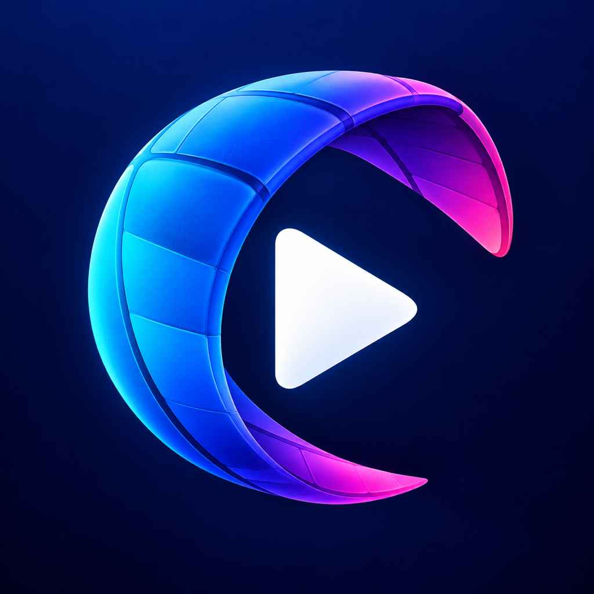
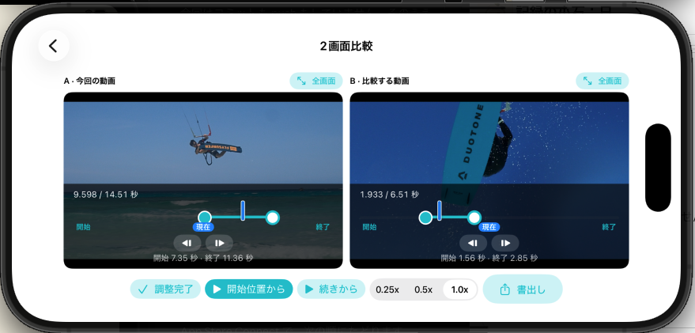
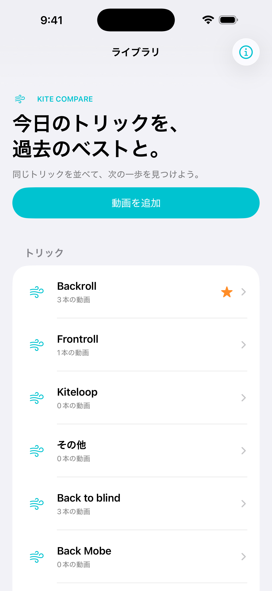
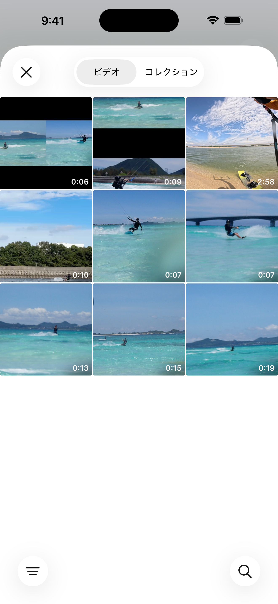
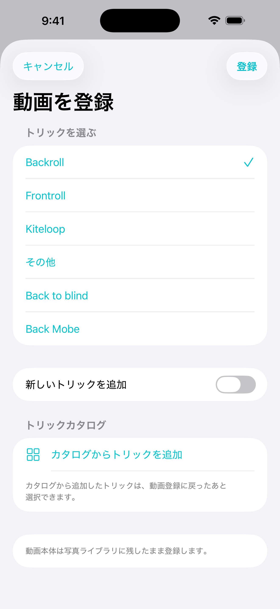
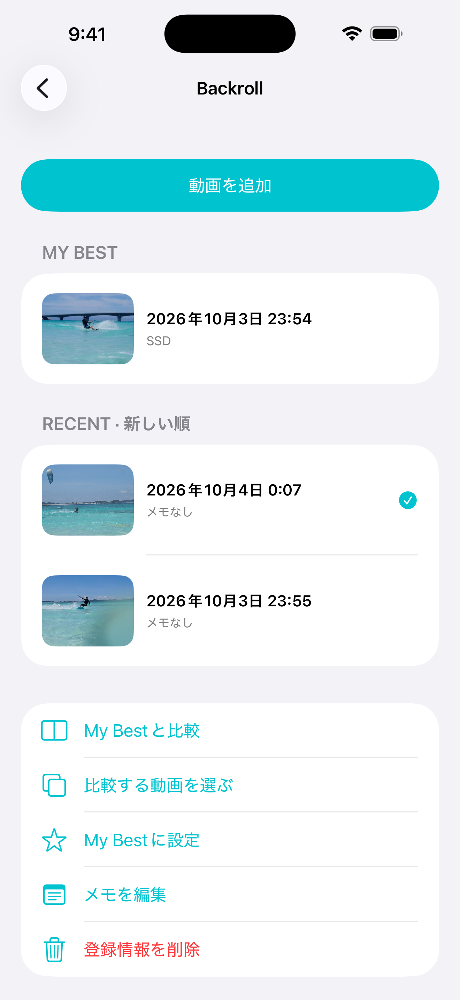
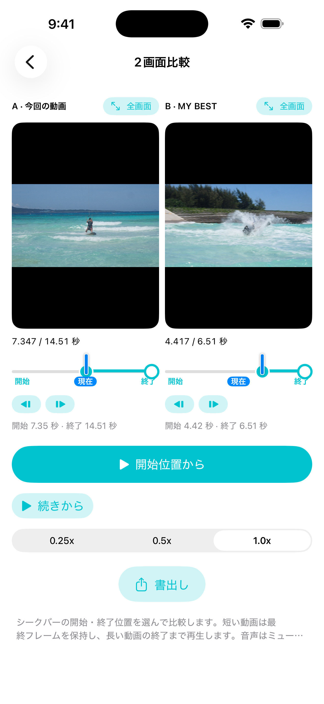

Kite Compareカイトボードのトリック動画をトリックごとに整理し、今回の試行と My Best を2画面で同期再生。スローとコマ送りで、テイクオフからランディングまでの違いを見つけられます。

2画面比較 — それぞれの開始位置・終了位置を合わせて、同時にスタート
A・B の開始位置を個別に決めて、同じタイミングで再生。短い側は最後のフレームで止まります。
速い回転やグラブも、スロー再生でじっくり確認できます。
一時停止したままコマ単位で位置を合わせ、ポップの瞬間を揃えます。
気になる側を全画面にして、単独で再生・シーク・コマ送り。
動画をトリックごとに登録し、1本を My Best に。メモも残せます。
並べた区間を1本の動画にして、写真に保存したり仲間に送れます。

ライブラリにはトリックごとの登録本数と My Best の有無が並びます。

写真ライブラリのビデオから1本選びます。動画本体は複製しません。

既存のトリックを選ぶか、新しいトリック名を追加して「登録」。

動画を選んで「My Best に設定」。新しい動画を選び「My Best と比較」へ。

A・B それぞれの開始位置をシークバーとコマ送りで合わせ、「開始位置から」。速度は 0.25x〜1.0x。
動画の登録・整理、2画面比較、スロー、コマ送り、全画面表示。
難易度・スタイルで絞り込めるトリック一覧から登録。
左右／上下レイアウトの比較動画を生成。
価格は App Store でご確認ください。
動画は写真ライブラリを参照するだけで複製しません。アカウント登録は不要で、データを開発者のサーバーへ送信しません。